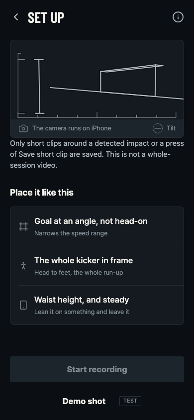
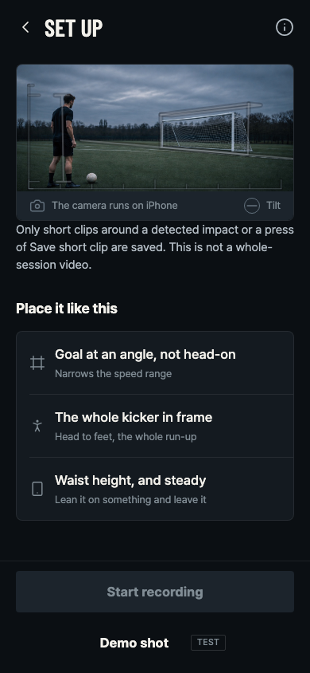
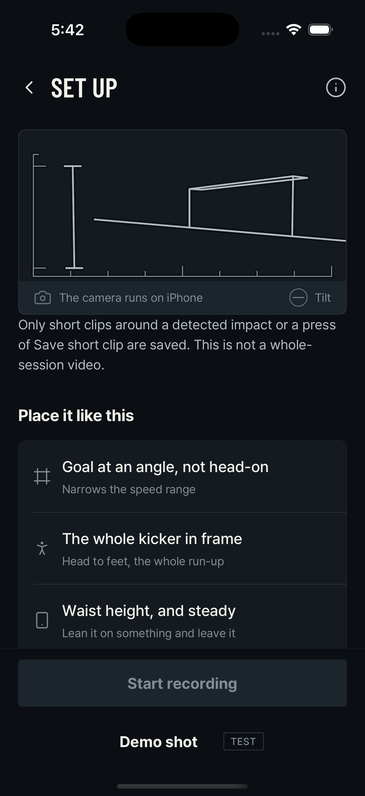
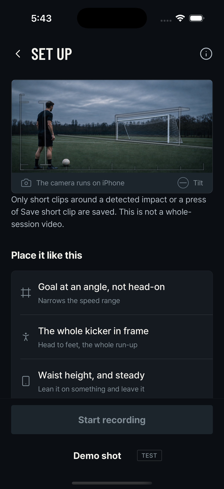
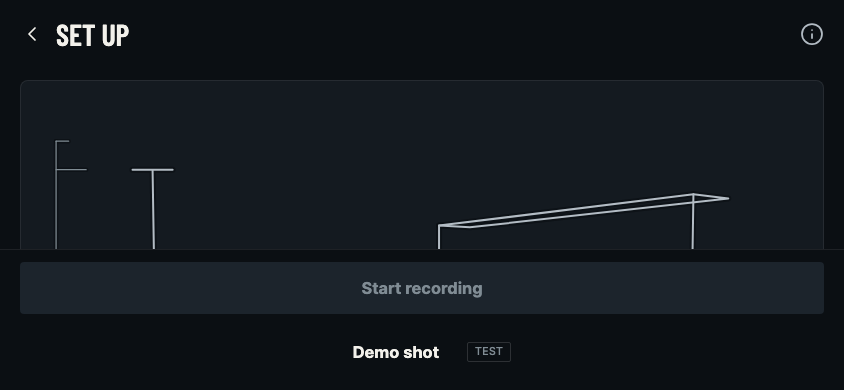
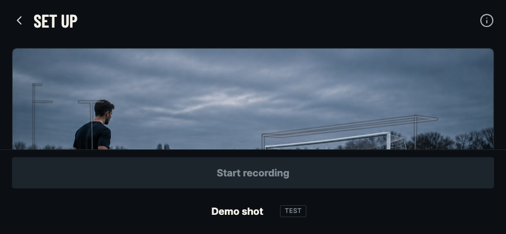
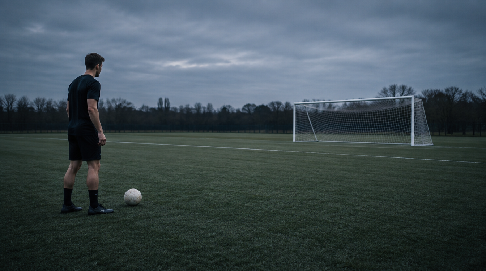
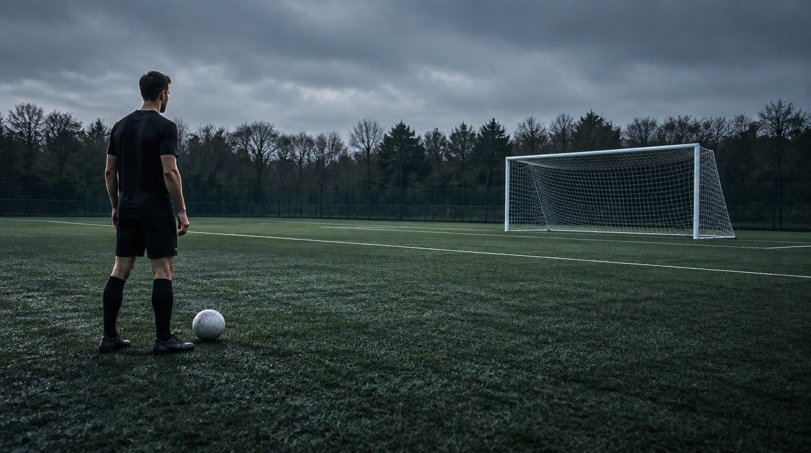
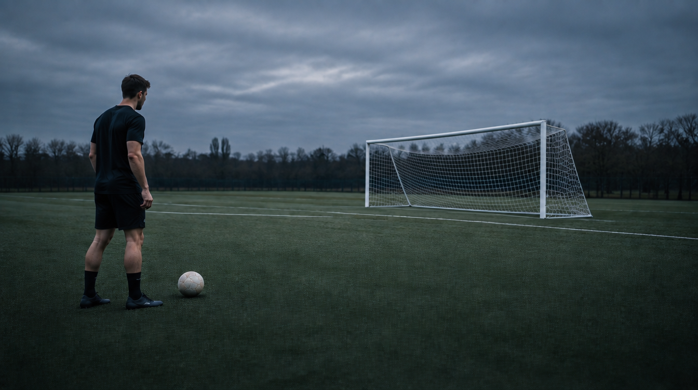

Phone portrait · 390 × 844
Actual React Native Web screens. The before frame comes from the design record at e94e262; the after frame is freshly captured from this worktree. Both full subjects remain inside the well.
{kind=link}

{kind=link}

iPhone 17 Pro simulator
Fresh xcrun simctl screenshots, 1206 × 2622 pixels. Existing installed development client loads this worktree from port 8104. The simulator cannot supply a real camera; this verifies the not-live well only. No native rebuild.
{kind=link}

{kind=link}

Landscape Set Up · 844 × 390
Both freshly captured in this task. Existing limitation: the tall 16:9 setup well extends behind the fixed bottom controls in landscape. This asset change preserves that layout; the cropped view is shown honestly.
{kind=link}

{kind=link}

Landscape recording · 844 × 390
Development demo recording surface, not a live camera. Before and after are byte-identical: the reference plate does not appear here. The baseline branch already omits the historical recording guide.


Portrait size checks
Full kicker, ball and goal at all three sizes. Existing 320px status/instruction ellipses and scroll-boundary clipping remain.
{kind=link}
{kind=link}
Three Higgsfield candidates
Model: gpt_image_2_5. Candidate C is the selected 188 KB app JPEG source. The guide and generated goal do not align exactly; the computed projection remains unchanged.
{kind=link}

{kind=link}

{kind=link}

Existing assets reviewed first
The player-kit goal is an analytical illustration, its zone card carries results, and its motion assets animate the logo. The first-shot portrait has a low camera and unsuitable crop. The opening film is a concept with vertical framing and analytical effects. None teaches this camera placement as-is.